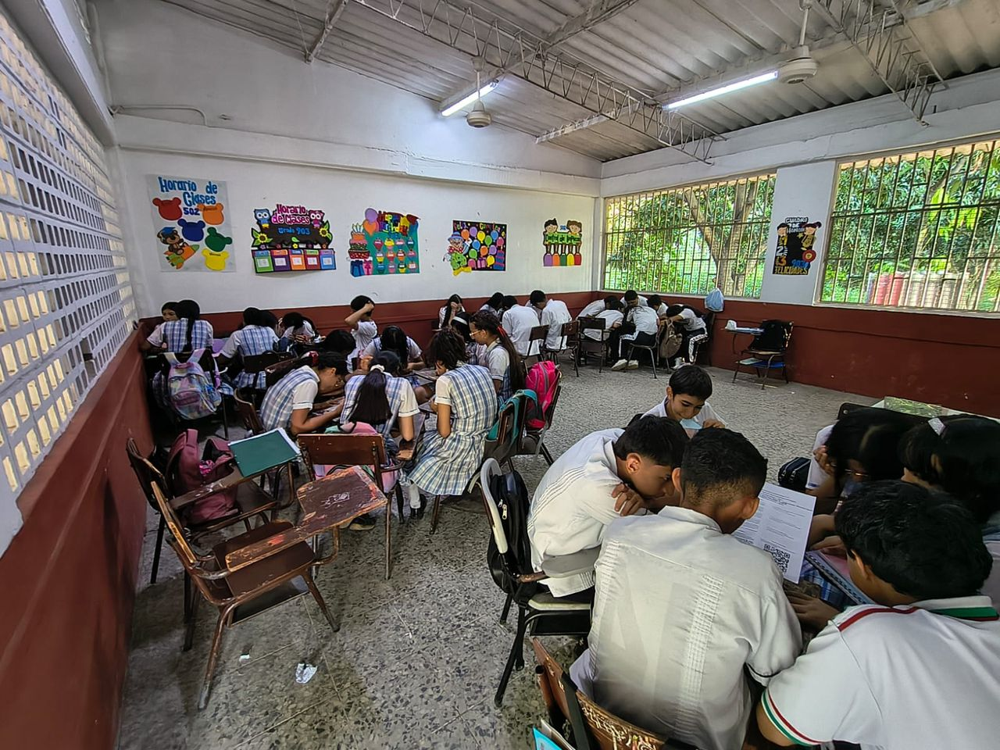
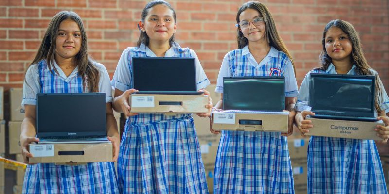
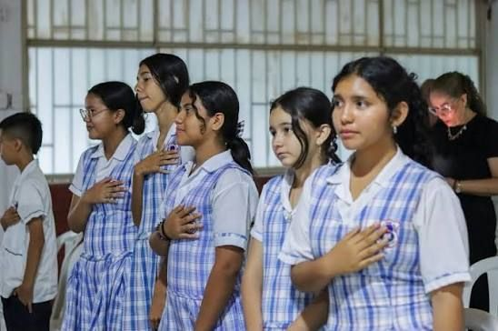
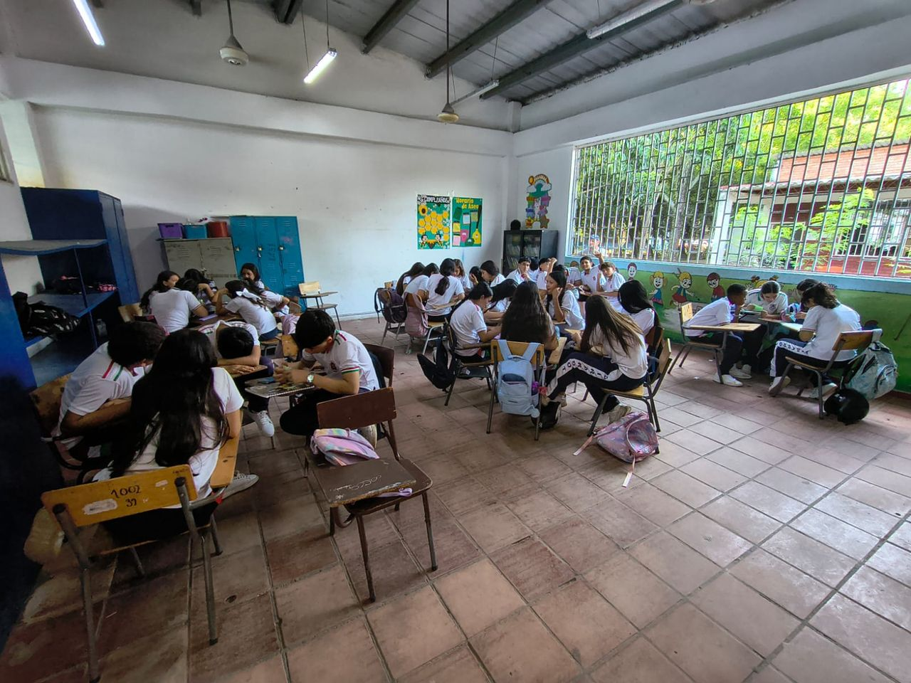
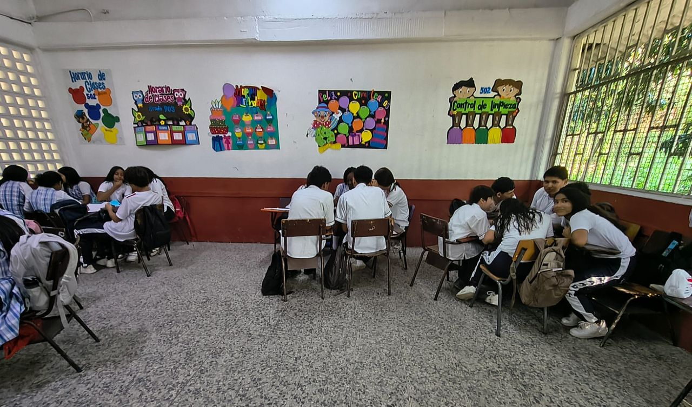

Razonar
¿Qué sabemos y qué necesitamos saber? Relaciones, patrones y conceptos.
Núcleo de Matemáticas y Tecnología · Centro de Interés
Un espacio para Razonar, Analizar, Crear y Resolver problemas reales de Girardot con matemáticas, programación e inteligencia artificial. Encuentra aquí tu diagnóstico, los retos y las simulaciones de tu nivel.
Pilares del proyecto
¿Qué sabemos y qué necesitamos saber? Relaciones, patrones y conceptos.
¿Qué dicen los datos? Recolectar, organizar e interpretar información.
¿Qué solución podemos proponer? Algoritmos, modelos y prototipos.
¿Funciona nuestra propuesta? Implementar, probar y mejorar.
Espacios por nivel
Cada nivel tiene tres espacios: Diagnóstico para conocer tu punto de partida, Retos con situaciones de Girardot y Simulaciones para explorar escenarios.
Nuestra comunidad





Proyecto institucional transversal · Horizonte 2026–2030
Pregunta orientadora ¿Cómo fortalecer el pensamiento matemático y computacional de los estudiantes de la Escuela Normal Superior María Auxiliadora mediante la resolución de problemas reales que contribuyan a comprender y transformar el territorio de Girardot?
Fortalecer, entre 2026 y 2030, el pensamiento matemático y computacional de los estudiantes de 6.° a 11.° mediante la identificación de problemáticas del territorio, el análisis de datos y la creación de entornos simulados apoyados en programación, inteligencia artificial y herramientas digitales, de manera que al menos el 80 % de los estudiantes participantes diseñe, analice o implemente una solución simulada orientada a comprender y transformar una situación real de su territorio.
Metas del Centro de Interés
Ruta metodológica
Articulación con el PEI
Equipo dinamizador
Lo que pasa en el Centro de Interés y en el territorio.
Evidencias fotográficas del proceso.
Seguimiento del proyecto
Seguimiento personal
Acceso restringido · Rol administrador